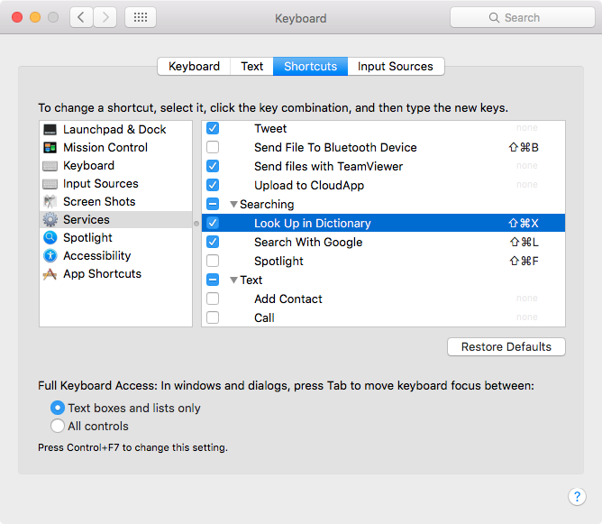

第二章：你的第一个程序¶
放心，你的第一个程序肯定不是那个著名的“Hello World!”…… 那个实在是太不好玩了。
1. π 这个数字很好玩¶
π 被定义为标准圆的周长和直径的比例： \(\pi = \frac{C}{d}\) ……

可问题它的数值究竟是什么呢？人类为此努力了几千年呢！公元 480 年前后，中国的祖冲之给出一个估算： \(\frac{22}{7} < \pi < \frac{355}{113}\)，即， 3.1415926 < π < 3.1415927。有人觉得祖冲之没什么了不起，因为他相当于是用在他大约两百年前的刘徽得出 \(π ≈ \frac{157}{50}\) 的方法接着“死算”出来的…… 可说实话，在没有计算机、计算器的年代，死算绝对是功夫啊！
你可以在 Python 命令行里输入试试：
$ python
>>> 355/113
3.1415929203539825
>>> 22/7
3.142857142857143
有空可以到网上 Google 一下 history of π，挺有意思的。十八世纪，德国数学家戈特弗里德·莱布尼茨（ Gottfried Wilhelm Leibniz，1646.7.1－1716.11.14 ） 提出一个另外一个可以通过“死算”去无限接近 π 的算法，倒是很适合拿来作为编程教学的例子：
按照这个算法，大抵上要算上 10,000 项，才有小数点后 3 位精确（3.141\49...）…… 于是，想要更精确的结果，是绝对没办法通过手工计算完成的，而且中间若是出错，甚至都难以想象应该如何检查。而这样的时候，就是我们需要计算机的时候：告诉它怎么做，然后重复甚至无数次，直至得到我们满意的结果 —— 某种意义上，计算机从一开始就是被设计来做这种事情的 —— 并且，最好的是：它不会出错！
2. 编辑并运行一个程序¶
现在开始动手，尝试编辑一下你的第一个程序罢 —— 虽然你有可能完全看不懂……
用 Terminal 给自己创建一个工作目录：
mkdir ~/code/python
cd ~/code/python
然后用 PyCharm 打开这个目录（注意末尾的那个点`.`）：
$ charm .
在 PyCharm 中通过快捷键 ⌘n 创建一个新文件，computing_pi.py 并保存，输入以下内容，注意，不许拷贝粘贴！
# Computing π with Leibniz's formula
pi, sign = 0, 1
n = int(input("We'll caculate 10**n terms...\nPlease specify n:"))
terms = 10 ** n
for i in range(terms * 2):
if i/2 != int(i/2):
pi = pi + 4 * sign / i
print(pi)
sign = sign * -1
这只是一个“演示”程序，所以它很“初级”，比如，程序执行之后，当你被要求输入数字的时候，若是你输入了一个字母，它没有错误处理，直接报错；再比如，我们没用 pi += 4 * sign / i 这样用 += 的“高级用法”。现在，这并不重要，重要的是，你大概知道程序这东西究竟是怎么回事儿了。
如果你的输入没有任何错误的话（第一次通常不太可能），那么就可以通过快捷键 ⌃ ⌥ r 运行这个程序了。它会要求你输入一个数字（你就输入 1~6 之间的整数就行），而后给你一个运算结果 —— 比如，你输入的数字是 6，那么，程序总计大约运算了 1,000,000 个项（10 6），而你会看到的结果大概是：
4.0
2.666666666666667
3.466666666666667
...
3.141593653594774
3.141591653585774
3.141593653592774
3.141591653587774
3.1415936535907742
3.1415916535897743
3. 程序员的编辑器都是很智能的……¶
在计算机上输入各种字符，事实上是很不容易的。并且，写程序又不是写文章，有几个错别字无所谓，反正读文章的是人，他们看得懂，猜的出…… 写程序不行，错一个字符都不行。并且，还有那么多的规矩，比如，在 Python 里，行首的“缩进”是有意义的，再比如，有些语句末尾要加上冒号 :，否则就会报错…… 所以，程序员所使用的编辑器（无论是哪一种，Vi、Emacs、SublimeText 等等），包括 PyCharm，都有很多帮助程序员方便输入编辑程序的功能。
比如，比如，当你用选中 We’ll caculate 10**n terms…nPlease specify n: 这样一串支付之后，按一次 "，你就会发现，在字符串两端都加上了引号。
再比如，你可能已经注意到了，在 PyCharm 编辑器里，当你输入左括号 ( 的时候，它会自动补足对应的右括号，而后变成 ()。等你在括号里输入了一些字符之后，如果你觉得把手移开而后去按 → 键很麻烦的话（因为右手离开了键盘的主位，一会儿还要重新移过来），那么你可以使用快捷键 ⌃ f，这个快捷键相当于 →……（这个快捷键可以在 Preference > Keymap 里通过搜索 ‘Right’ 找到。）
又比如，当你输入 for i in range(terms * 2) 之后，按一下 ⇧ ⏎ 组合键，你会发现行末自动加上了一个冒号 :；如果是在一个不需要末尾添加冒号的语句中按 ⇧ ⏎，光标就挪到下一行，且不添加冒号……
再试试这个：你把光标移动到 for 这个词之中，而后按 F1 （根据你的系统设置，很可能你需要按的键是 fn F1 ），你会看到关于 for 的帮助文档：
也许你想去 Google 一下“Pycharm Tutorial”，这当然是对的，不过，在任何时候，最值得先去通读的，肯定是官方文档。Jetbrains 当然会提供 官方帮助文档 ，去看看好了。送你两个字：通读。只要养成了“闲着没事儿就通读官方文档”的好习惯，你已经打败 90% 的人了 —— 绝不夸张。若是再养成“张嘴问之前先去 Google”一下，你绝对已经打败了 99% 的人 —— 真是太夸张了！
4. 第一个拦路虎：英语¶
这个拦路虎拦住了绝大多数人，可是它不应该能够拦住你 —— 你要是被他拦住了，你就亏死了。当然，那些被拦住的人，从来都没有机会知道他们其实根本就不应该被拦住的，更不会有机会知道自己究竟吃了多大的亏？
其实，送你一句话就可以了：硬着头皮读下去…… 早晚会适应。
就这么简单？就这么简单！
许多年前，我想明白一个道理，“只学不用”是绝大多数人终生学渣的根本原因，天天“学”，却从来不用！真的很诡异，不是吗？我还专门写过一本书来说明这个道理，叫做《人人都能用英语》，免费放在网上。再后来，又过了许多年，我又想明白另外一个重要的道理 —— 那些能学会的，没人教也能学会，那些学不会的，无论上过多少课都依然不会，为什么呢？
道理很简单：
那些学会的人从来没觉得自己学不会……
以上这句话，可能需要你反复揣摩，不断反思自己在学习过程中的细微闪念。
我们其实习得过很多非常复杂的技能。比如，中文。平心而论，中文比英文复杂太多了，并且相对格外含混，可你学会了啊！为什么中文都能学会，英文却死活不能？根本原因就是你从一开始就觉得英文是“很难的！”是“我根本学不会的！” —— 完了，因此你是绝对学不会、学不好的。
不管你想学什么，你都要像是小孩子学自行车、小孩子学说话一样，从来不去想“自己能不能学会？”“自己做的好不好？” 而是，不管三七二十一就开始弄，骑自行车摔了，就摔了呗？爬起来接着骑！说话没说对，被别人嘲笑了，那又如何？接着说呗！
不就是读个英文文档么？读不懂又怎样？查查词典接着读呗！哦，对了，在 Mac 上，选中一个词之后，用三个指头点一下触摸板，就可以呼出字典的解释。也可以在系统设置里，为查找词典设置自定义快捷键：
再说，读懂计算机类的文档，其实很简单的，所用词汇量也并不多，只不过刚开始的时候不适应而已。另外，绝对不要相信“语言天分”那一说，这东西就算有，影响的也不是通读计算机类英文文档这种活动，放心好了。
5. 好像突然间就读懂了……¶
别说英语，程序语言也是一样的。你把上面的那段程序反复输入很多次试试看？一次性输入正确，运行无误，之后，删掉，重新来过，重复很多遍……
感觉上，这么做挺傻的。那怎么办？可以在阅读 Pycharm 官方帮助文档 的时候，不断把自己学到的编辑器使用技巧应用起来，拿以上的那段程序当作用来练手的材料。可以先把注意力放在“学会使用 Pycharm 编辑器”之上，虽然你还是不得不被动地反复阅读那一段代码。
几遍之后，你好像能自动明白了 sign = sign * -1 究竟是什么意思？不妨实验一下么：写个程序验证一下自己的想法
1 2 3 4 5 6 | sign = 1
print(sign)
sign = sign * -1
print(sign)
sign = sign * -1
print(sign)
|
1
-1
1
-1
当你第一次看到 sign = sign * -1 的时候，你脑子里调用的是你已有的知识（代数），然后就觉得这事儿不合理，因为它用你脑子里已有的理解来看，不合理，因为 sign = sign * -1 就相当于是 0 = 1，这怎么回事儿嘛！
在编程语言里，= 是个操作符，功用是“赋值”，你可以这样理解它：
它会让=左边的变量值变成=右边的计算结果，而=右边出现的变量的值，都是该变量在此之前所保存的值。
所以，第 3 行相当于: sign = 1 * -1，因为在此之前，sign = 1，于是第 3 行执行过后，sign = -1；而第 5 行相当于 sign = -1 * -1，因为再次之前，sign = -1，于是，在此之后，sign = 1。
你想知道 for .. in range(...) 是怎么回事儿？
自己写段代码试试呗？
1 2 | for i in range(10):
print(i)
|
再试试：
1 2 | for i in range(1, 10):
print(i)
|
再试试：
1 2 | for i in range(1, 10, 2):
print(i)
|
若是你已经能看懂了的话，估计你会尝试着把程序改成这个样子：
# Computing π with Leibniz's formula
pi, sign = 0, 1
n = int(input("We'll caculate 10**n terms...\nPlease specify n:"))
terms = 10 ** n
for i in range(1, terms * 2, 2):
pi = pi + 4 * sign / i
print(pi)
sign = sign * -1
6. 换个方法估算 π ？¶
还有个估算 π 的算法，叫做 The Wallis Product:
估计下面这个程序你很容易看懂了：
1 2 3 4 5 6 7 | # Computing π with the Wallis product
pi = 1
n = int(input('How many product terms? '))
for j in range(1, n):
pi *= 4 * j ** 2 / (4 * j ** 2 - 1)
pi *= 2
print(pi)
|
有疑问也不要怕，反正你刚刚开始…… 在看到前一小节的标题“好像突然之间就懂了”的时候，若是你真的还没有懂，也不要“自卑”，这很正常，真的是因为你重复的次数不够多的缘故而已。“读书千遍其义自见” —— 这真不是说着玩儿的！